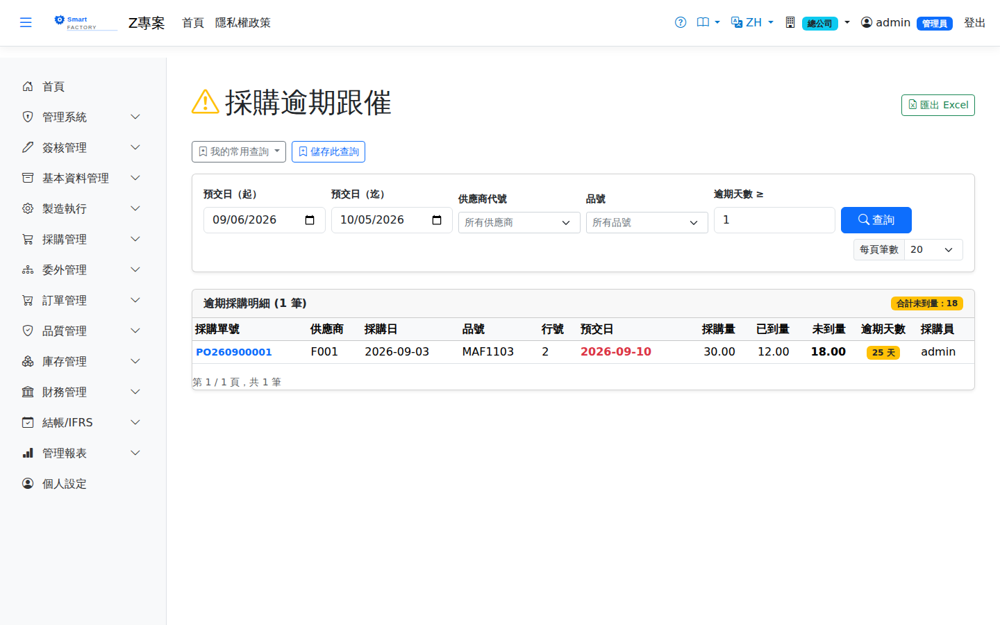

採購逾期跟催Overdue Purchase Orders
路由：/PurchaseOverdue | 逾交期未到貨採購行列表Route: /PurchaseOverdue | Order lines past their delivery date and not yet received
列出已過交期仍未收貨（或部分收貨）且未結案的採購行，含逾期天數與採購員，供採購每日跟催。已結案（IsClosed）的採購行不再列入。Lists order lines past their delivery date that are not yet received (or only partly received) and not closed, with the overdue days and the buyer, for daily follow-up. Closed lines (IsClosed) are excluded.

採購逾期分析畫面截圖（示意，實際欄位/資料依權限與查詢條件而異）Purchase overdue analysis screenshot (illustrative; actual fields and data vary by permission and query criteria)
查詢Search
1
查詢列可依「預交日區間、供應商、品號」過濾後點「查詢」。Filter by delivery date range, supplier and product in the search bar, then click "Search".
2
「逾期天數 ≥」可只列出逾期達 N 天以上的行（預設 1＝全部逾期行）。"Overdue Days ≥" lists only lines overdue by at least N days (the default 1 shows every overdue line).
3
清單含「採購員」欄（採購單建單人），點採購單號可於側欄檢視單據；具列印權限可匯出 Excel。The list includes a "Buyer" column (whoever created the order); click an order number to view the document in the side panel, and export to Excel with print permission.
欄位說明Field reference
查詢條件Query criteria
| 條件Condition | 說明Guide |
|---|---|
| 預交日（起 / 迄）Delivery date (from / to) | 依採購明細的預計到貨日區間篩選。留白時預設近 30 天，不是「不限起日」Filters by the expected delivery date range on the order lines. Left blank, it defaults to the last 30 days rather than to no lower bound. |
| 供應商代號 / 品號Supplier / Product | 各自縮小查詢範圍each narrows the query scope |
| 逾期天數 ≥Overdue Days ≥ | 只列出逾期達指定天數以上者，用於聚焦嚴重延誤Lists only items overdue by at least the given number of days, to focus on serious delays |
報表欄位Report fields
| 欄位Field | 說明Guide |
|---|---|
| 採購單號 / 行號Order No. / Line | 逾期的採購單與其明細行The overdue purchase order and its lines |
| 供應商Supplier | 交貨的供應商Delivering supplier |
| 採購日 / 預交日Order Date / Delivery Date | 下單日期與承諾到貨日Order date and promised delivery date |
| 品號Item | 採購的料件Item being purchased |
| 採購量 / 已到量 / 未到量Order Qty / Received Qty / Pending Qty | 訂購數量、累計進貨量，以及仍未到貨的差額Ordered quantity, cumulative receipts and the balance still outstanding |
| 逾期天數Overdue Days | 廠別當地日 － 預交日；是催料的優先排序依據。基準日取的是該廠時區的今天而不是伺服器時區，廠別與伺服器不同時區時才不會整批差一天The plant's local date − the promised delivery date; it drives the follow-up priority. The baseline is today in the plant's own time zone, not the server's, so a plant in another zone is not out by a day across the board |
| 採購員Buyer | 負責此採購單的採購人員，便於指派追蹤Buyer responsible for this order, making follow-up easy to assign |